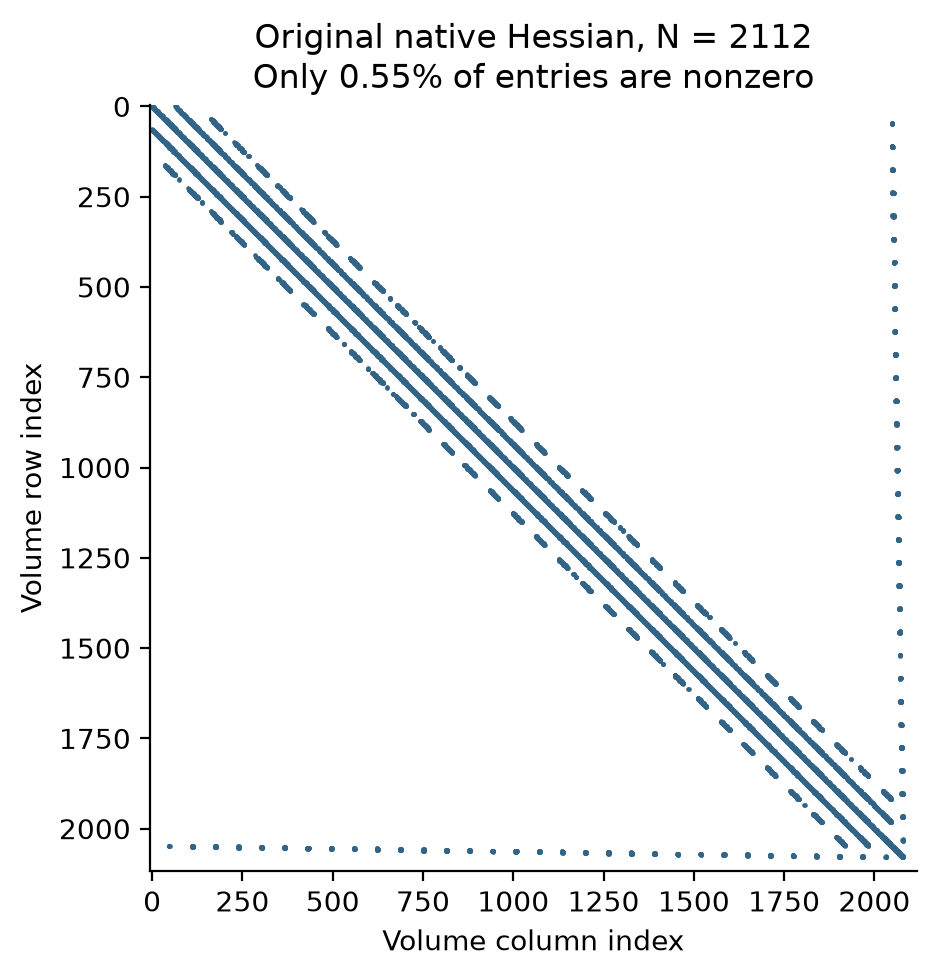
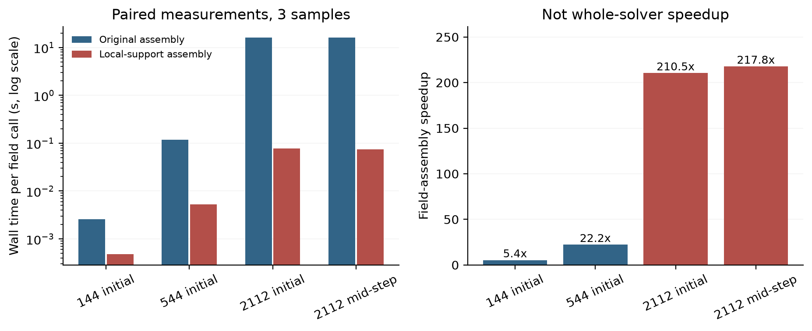

后续实际计算已启动：5微米10微秒配对的冻结计划、启动快照和半小时监视记录。尚无完成或收敛结论，活跃原生帧未复制到网页。
大矩阵里大多是零，
计算可以只做有贡献的部分。
5微米单步较贵，因此本轮先测成本，再测试局部非零组装。结果：二阶字段计算约快210倍；完整单步仍约54秒，其他成本没有消失。全部事前数值与实际输出检查通过。
这是计算实现的改进，默认求解器未切换。完整C1、实际空间收敛和独立物理通量／牵引力验证仍待完成。
01 · 先确认成本，不猜瓶颈。
读取144、544和2112粒子的原生冻结状态，保持原模型、材料、几何与浴液数据。2112粒子时，不组装二阶矩阵的字段调用约0.071–0.073秒，带二阶组装的调用约16.4–16.6秒；缓存后的矩阵向量作用约1毫秒。
这些调用互相包含，不能相加为完整耦合步的耗时占比。它们说明二阶组装是值得处理的实际成本，并不直接测得完整求解器的瓶颈份额。
02 · 二阶矩阵为什么可以局部组装？

每个单元的曲面面积由相邻面决定，所以单个二阶贡献只涉及少量邻居。原实现仍对整张大矩阵执行外积，包括大量零项。2112粒子初始与机械端点的原生矩阵中，非零比例分别约0.46%和0.55%。
候选继续沿用原能量、压力和一阶字段，只把二阶贡献按局部非零索引组装。所有曲面稀释、跨面毛细项、分离压对角项及有符号浴液约定都保留；没有丢弃小数值。输出仍是同样的稠密矩阵，通用H1求解后端保持原样。
这种局部／稀疏装配是常见数值实现方法，可参考Eigen官方教程。本轮不将它作为新的排液物理创新。
03 · 加速有多大，答案差多少？

| 粒子数／状态 | 原矩阵非零比例 | 原二阶字段 | 候选二阶字段 | 字段加速 |
|---|---|---|---|---|
| 144 / 初始 | 5.826% | 0.002579秒 | 0.000480秒 | 5.4倍 |
| 544 / 初始 | 1.698% | 0.117050秒 | 0.005267秒 | 22.2倍 |
| 2112 / 初始 | 0.461% | 16.210085秒 | 0.077025秒 | 210.5倍 |
| 2112 / 机械端点 | 0.549% | 16.151227秒 | 0.074153秒 | 217.8倍 |
四个快照的能量、压力、曲面面积、节点能量与张力完全一致。全部矩阵元素最大相对差异约3.48e-16，三个确定方向的向量作用最大相对差异约5.53e-16，均低于事前2e-13门槛，处于双精度舍入量级。
56项候选测试还覆盖了曲面浴液、闭合平膜、有符号浴液计数、非零分离压和重力、陡峭高表活状态，以及体积变化后的缓存更新。分离压等非零参数只属于明确标注的数学测试，没有加入生产算例。
04 · 真正运行耦合以后呢？
候选实际运行了两次2112粒子单步，以及一次544粒子、10微秒的160步轨迹。原参照按已有SHA256读取，没有重算。全部原生力、能量、液量／表活和准备门槛通过；物理字段也通过事前设定的等价检查。
| 布局 | 实际模拟终点 | 接受步 | 候选原生计时 | 原生门槛 | 输出等价 |
|---|---|---|---|---|---|
| 2112粒子 | 0.0625微秒 | 1 | 54.35秒 | 通过 | 通过 |
| 2112粒子 | 0.03125微秒 | 1 | 54.08秒 | 通过 | 通过 |
| 544粒子 | 10微秒 | 160 | 362.27秒 | 通过 | 通过 |
原时间2%、空间10%门槛保持不变。这里额外要求全部Hessian元素在2e-13内一致，位置差／间距不超过1e-10，速度和面通量的归一差异不超过1e-8，其余状态物理列不超过1e-10。计时和数值残差诊断另列；原生残差门槛始终照旧执行。具体归一方式与全部字段结果见冻结计划和对照JSON。
原始字节是否相同也逐文件保留，但这不是新的“全部11文件逐字节”通过声称。上一轮几何候选因运行耗时字段不同而未通过的字节门槛，仍保留其原标签。
05 · 继续实际空间验证。
按候选首步成本加30%余量估计，5微米到10微秒的两档时间步约需3.14小时与6.25小时。这仍是工程预算，不能保证后续非线性迭代成本。后续长批次单独冻结计划，并在启动前设置每半小时监视；运行状态和实际结果另行记录。
原20→10微米、10微秒的空间比较仍未通过，膜厚变化和位移差异49.56%和76.12%。新的5微米10微秒时间／空间配对及50／200微秒仍要完成。独立物理法向通量／牵引力、交换系数、新薄膜元厚度比、整体条纹和保留工况实验验证也仍开放。
数据、源码与复现
展开全部记录、预先门槛和原始字节
- 原始成本诊断计划 · 候选条件计划与事前等价门槛 · 源码与构建记录
- 原始探针协议 · 四组原始计时结果 · 完整摘要 · 单步外推预算
- 候选源码／二进制与参照哈希 · 56项检查、全部矩阵和实际算例结果
- 独立核对源码协议 · 独立核对执行结果
- 5微米0.0625微秒逐字段对照 · 5微米0.03125微秒对照 · 10微秒轨迹对照
- 全部原生日志 · 53份原始文件清单 · 恢复脚本
- 完整原始数据分卷1
- 完整原始数据分卷2
- 完整原始数据分卷3
- 完整原始数据分卷4
- 恢复：
python restore_raw.py REPORT_DIRECTORY NEW_OUTPUT_DIRECTORY，拒绝覆盖并校验逐文件SHA256。原始矩阵全部非零值也在数据包中，没有阈值筛除。 - 原5微米启动与预算报告 · 原全域空间检查